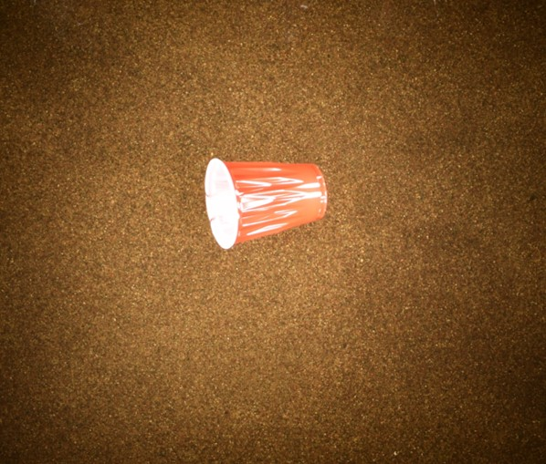

Spectral Signatures of Plastic Debris in Optically Complex River Systems!
Here you will find all the data and photos from my experiments.
Experimental Data
Data File 1
Data File 2
Data File 3
Photos
